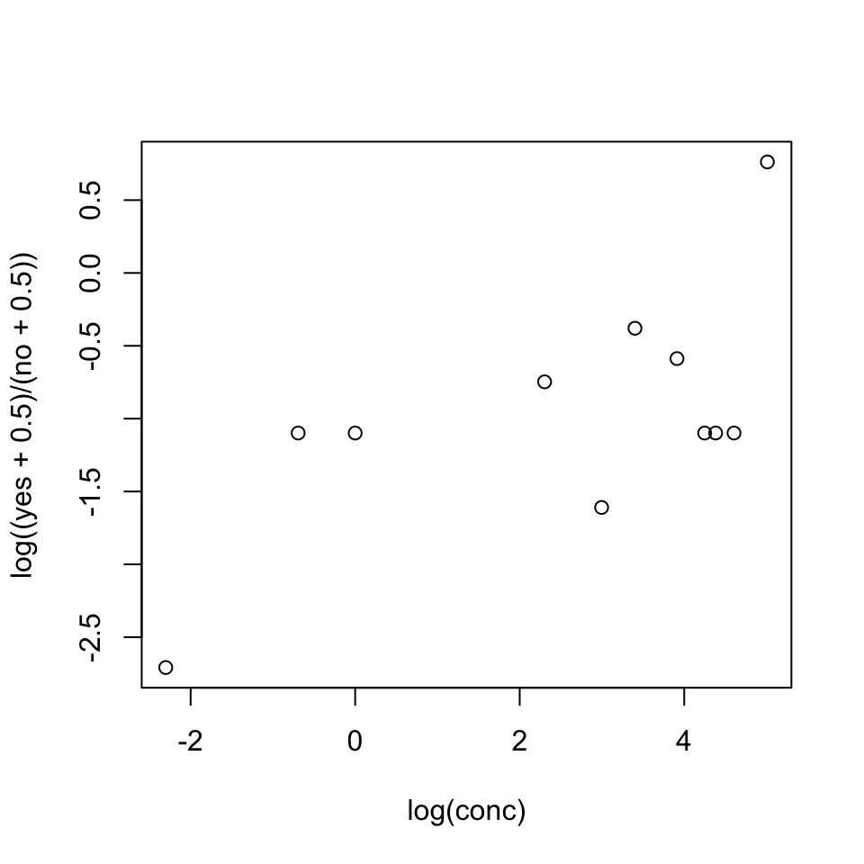

5 Answers to Selected Chapter 5 Exercises
Generalized linear models and survival analysis
Exercise 1
The following table shows numbers of occasions when inhibition (i.e., no flow of current across a membrane) occurred within 120 s, for different concentrations of the protein peptide-C (data are used with the permission of Claudia Haarmann, who obtained these data in the course of her PhD research). The outcome yes implies that inhibition has occurred.
conc 0.1 0.5 1 10 20 30 50 70 80 100 150
no 7 1 10 9 2 9 13 1 1 4 3
yes 0 0 3 4 0 6 7 0 0 1 7Use logistic regression to model the probability of inhibition as a function of protein concentration.
It is useful to begin by plotting the logit of the observed proportions against log(conc). Concentrations are nearer to equally spaced on a scale of relative dose, rather than on a scale of dose, suggesting that it might be appropriate to work with log(conc). In order to allow plotting of cases where no = 0 or yes = 0, we add 0.5 to each count.

The plot seems reasonably consistent with the use of log(conc) as the explanatory variable. Code is:
conc <- c(.1, .5, 1, 10, 20, 30, 50, 70, 80, 100, 150)
no <- c(7, 1, 10, 9, 2, 9, 13, 1, 1, 4, 3)
yes <- c(0, 0, 3, 4, 0, 6, 7, 0, 0, 1 ,7)
n <- no + yes
plot(log(conc), log((yes+0.5)/(no+0.5)))The code for the regression is: p <- yes/n inhibit.glm <- glm(p ~ I(log(conc)), family=binomial, weights=n) summary(inhibit.glm)
::: {.colbox data-latex=""}
::: {data-latex=""}
Exercise 2
:::
In the data set (an artificial one of 3121 patients, that is
similar to a subset of the data analyzed in Stiell et al. (2001))
`minor.headInjury`, obtain a logistic
regression model relating
`clinically.important.brain.injury` to other variables.
Patients whose risk is sufficiently high will be sent for CT
(computed tomography). Using a risk threshold of 0.025 (2.5\%),
turn the result into a decision rule for use of CT.
:::
::: {.cell layout-align="center"}
```{.r .cell-code}
sapply(headInjury, range) age.65 amnesia.before basal.skull.fracture GCS.decrease GCS.13
[1,] 0 0 0 0 0
[2,] 1 1 1 1 1
GCS.15.2hours high.risk loss.of.consciousness open.skull.fracture vomiting
[1,] 0 0 0 0 0
[2,] 1 1 1 1 1
clinically.important.brain.injury
[1,] 0
[2,] 1injury.glm <- glm(clinically.important.brain.injury ~ .,
data=headInjury, family=binomial)
summary(injury.glm)
Call:
glm(formula = clinically.important.brain.injury ~ ., family = binomial,
data = headInjury)
Coefficients:
Estimate Std. Error z value Pr(>|z|)
(Intercept) -4.4972 0.1629 -27.611 < 2e-16
age.65 1.3734 0.1827 7.518 5.56e-14
amnesia.before 0.6893 0.1725 3.996 6.45e-05
basal.skull.fracture 1.9620 0.2064 9.504 < 2e-16
GCS.decrease -0.2688 0.3680 -0.730 0.465152
GCS.13 1.0613 0.2820 3.764 0.000168
GCS.15.2hours 1.9408 0.1663 11.669 < 2e-16
high.risk 1.1115 0.1591 6.984 2.86e-12
loss.of.consciousness 0.9554 0.1959 4.877 1.08e-06
open.skull.fracture 0.6304 0.3151 2.001 0.045424
vomiting 1.2334 0.1961 6.290 3.17e-10
(Dispersion parameter for binomial family taken to be 1)
Null deviance: 1741.6 on 3120 degrees of freedom
Residual deviance: 1201.3 on 3110 degrees of freedom
AIC: 1223.3
Number of Fisher Scoring iterations: 6:::
Observe that log(.025/(1-.025)) = -3.66, an increase of 0.84 above the intercept (= -4.50). This change in risk results from (1) GCS.decrease with any other individual factor except amnesia.before, GCS.decrease and open.skull.fracture; (2) GCS.decrease with any two of amnesia.before, open.skull.fracture and loss.of.consciousness; (3) any of the individual factors age.65, basal.skull.fracture, GCS.15.2hours, high.risk and vomiting, irrespective of the levels of other factors.
Exercise 3
Consider again the moths data set of Subsection 5.4.2.
- What happens to the standard error estimates when the
poissonfamily is used inglm()instead of thequasipoissonfamily? - Analyze the
Pmoths, in the same way as theAmoths were analyzed. Comment on the effect of transect length.
- The dispersion estimate was 2.7. Use of the
quasipoissonfamily has the effect of increasing SEs by a factor of \(\sqrt{2.7}\), relative to thepoissonfamily. SEs on pp.265 will thus be reduced by this factor if thepoissonfamily is (inappropriately) specified.
sapply(split(moths$P, moths$habitat), sum) Bank Disturbed Lowerside NEsoak NWsoak SEsoak SWsoak Upperside
4 33 17 14 19 6 48 8 moths$habitat <- relevel(moths$habitat, ref="Lowerside")
P.glm <- glm(P ~ habitat + log(meters), family=quasipoisson,
data=moths)The highest numbers are now for SWsoak and for Disturbed The number of moths increases with transect length, by a factor of approximately 1.74 (= \(e^.55\)) for each one meter increase in transect length. \end{enumerate} ````
Exercise 4
*The factor dead in the data set mifem (DAAG package) gives the mortality outcomes (live or dead), for 1295 female subjects who suffered a myocardial infarction. (See Subsection 8.3.1 for further details.) Determine ranges for age and yronset (year of onset), and determine tables of counts for each separate factor. Decide how to handle cases for which the outome, for one or more factors, is not known. Fit a logistic regression model, beginning by comparing the model that includes all two-factor interactions with the model that has main effects only.
First, examine various summary information:
str(mifem)'data.frame': 1295 obs. of 10 variables:
$ outcome : Factor w/ 2 levels "live","dead": 1 1 1 1 2 1 1 2 2 2 ...
$ age : num 63 55 68 64 67 66 63 68 46 66 ...
$ yronset : num 85 85 85 85 85 85 85 85 85 85 ...
$ premi : Factor w/ 3 levels "y","n","nk": 2 2 1 2 2 2 2 1 2 1 ...
$ smstat : Factor w/ 4 levels "c","x","n","nk": 2 1 4 2 4 2 3 3 1 1 ...
$ diabetes: Factor w/ 3 levels "y","n","nk": 2 2 3 2 3 3 2 2 2 2 ...
$ highbp : Factor w/ 3 levels "y","n","nk": 1 1 1 1 3 3 1 1 1 1 ...
$ hichol : Factor w/ 3 levels "y","n","nk": 1 1 3 2 3 3 2 1 3 2 ...
$ angina : Factor w/ 3 levels "y","n","nk": 2 2 1 1 3 3 2 1 3 2 ...
$ stroke : Factor w/ 3 levels "y","n","nk": 2 2 2 2 3 3 2 1 2 1 ...sapply(mifem[, c("age", "yronset")], range) age yronset
[1,] 35 85
[2,] 69 93lapply(mifem[, -(1:3)], table)$premi
y n nk
311 928 56
$smstat
c x n nk
390 280 522 103
$diabetes
y n nk
248 978 69
$highbp
y n nk
813 406 76
$hichol
y n nk
452 655 188
$angina
y n nk
472 724 99
$stroke
y n nk
153 1063 79 For all of the factors, there are a large number of nk’s, i.e., not known. A straightforward way to handle them is to treat nk as a factor level that, as for y and n, may give information that helps predict the outcome. For ease of interpretation we will make n, the reference level.
for(j in 4:10)mifem[,j] <- relevel(mifem[,j], ref="n")
mifem1.glm <- glm(outcome ~ ., family=binomial, data=mifem)
mifem2.glm <- glm(outcome ~ .^2, family=binomial, data=mifem)
anova(mifem1.glm, mifem2.glm)Analysis of Deviance Table
Model 1: outcome ~ age + yronset + premi + smstat + diabetes + highbp +
hichol + angina + stroke
Model 2: outcome ~ (age + yronset + premi + smstat + diabetes + highbp +
hichol + angina + stroke)^2
Resid. Df Resid. Dev Df Deviance
1 1277 1172.6
2 1152 1013.8 125 158.87CVbinary(mifem1.glm)
Fold: 7 6 2 1 4 8 3 10 5 9
Internal estimate of accuracy = 0.807
Cross-validation estimate of accuracy = 0.8CVbinary(mifem2.glm)
Fold: 4 5 6 10 9 3 7 8 2 1
Internal estimate of accuracy = 0.839
Cross-validation estimate of accuracy = 0.785Warning messages that “fitted probabilities numerically 0 or 1 occurred” have been suppressed in the output shown.
The difference in deviance suggests a real difference (pchisq(125,159) = 0.021). Here, however, the chi-squared approximation to the change in deviance should be queried.
It is safer to compare the cross-validated accuracy estimates, which in individual cross-validation runs were marginally lower for mifem2.glm than for mifem2.glm; 0.78 as against 0.80. Note also that there were convergence problems for the model that included all first order interaction terms.